Chulilla · Desde hace más de 50 años

Cocina tradicional y brasa, con producto de mercado y raíces de pueblo.
Antes de sentarte a la mesa
Chulilla es un pequeño pueblo de la Comunitat Valenciana, encajado entre los cortados de piedra de las Hoces del Turia. Es un lugar conocido por sus pasarelas colgantes sobre el río, por el castillo que vigila el valle desde lo alto y por un paisaje de barranco que atrae a senderistas, escaladores y amantes del agua tranquila de sus pozas.
Pero Chulilla también es despensa: colmenas de miel de azahar, hortalizas de secano, caza y un recetario de cuchara que se ha cocinado en las casas del pueblo durante generaciones. En La Rueda partimos de ahí. La brasa y el producto del día son nuestro punto de partida, y el pueblo, siempre, el punto de referencia.
Nuestra historia
La Rueda lleva más de cincuenta años abriendo sus puertas en Chulilla. Varias generaciones han pasado por esta casa, primero como clientes y después, muchas veces, como parte de su historia. Es ese tipo de restaurante que forma parte del paisaje del pueblo: el sitio al que se vuelve, el que atesora recetas y también celebraciones familiares.
Desde 2024, Edu y Carla llevan las riendas de la casa. Son pareja, y esa complicidad se nota en cómo han decidido repartirse el restaurante: Edu al frente de la cocina, Carla al frente de la sala. Es ese equilibrio —el fuego de la cocina y la cercanía de la sala— lo que le da a La Rueda su toque personal.
Antes de coger las riendas de La Rueda, Edu ha construido su trayectoria en algunas de las cocinas más reconocidas de la gastronomía española: Enigma, el proyecto de alta cocina de Albert Adrià en Barcelona; El Poblet, de Quique Dacosta; el Restaurante Ricard Camarena y su Canalla Bistró, entre otras casas de referencia. De ese recorrido se trae la exigencia por el producto, la técnica y el detalle, que hoy aplica a algo mucho más cercano: la cocina tradicional y la brasa de su propio pueblo.
Carla es quien recibe, quien acompaña la comida y quien conoce cada mesa por su nombre. Su forma de entender la sala —cercana, atenta, sin impostura— es la que convierte una comida en La Rueda en algo que se recuerda tanto por el trato como por el plato.
El resultado es una cocina que respeta la memoria de la casa —la olla de berzas, las manitas de cerdo, los platos de cuchara de toda la vida— y que a la vez incorpora la brasa y la mirada de una cocina profesional curtida en algunos de los fogones más exigentes del país. Tradición y oficio, en la misma mesa.
Producto del día
Trabajamos con producto fresco de mercado: la carta puede variar según el día.
Cargando la carta…
Te esperamos
Rellena el formulario y Carla confirmará tu reserva lo antes posible. Si lo prefieres, también puedes llamarnos directamente.
¿Prefieres hablar directamente con nosotros? 📞 613 72 76 80 · WhatsApp
Encuéntranos
Dirección
Avenida Ermita, 15
46167 Chulilla, Valencia
Teléfono
613 72 76 80
Email
restaurantelaruedachulilla@gmail.com